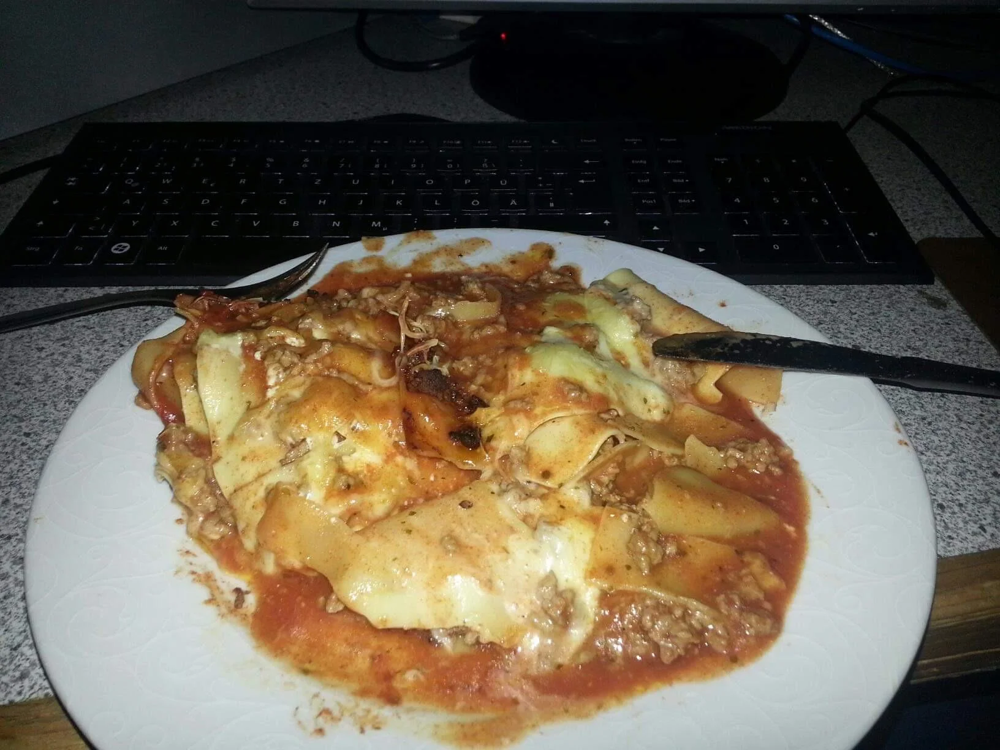

Lasagna Recipe

Description
This ain't ya grand ma ma's lasagna!
It's the crappy one you made.
Do you love tough, slimy pasta?
Acidic tomato sauce that makes Chef Boyardee taste like liquid gold?
Get ready to cruise straight past Flavortown to hell!
Ingredients
- 1 lb lean ground beef
- 1 large onion chopped
- 1 jar of tomato sauce
- 1 pack of lasagna pasta
- 1 pack of taco cheese
Steps
- Fry up that beef until it resembles a cow pie out in the texas heat
- At the same time boil that pasta until its so cooked it feels uncooked again
- Mix onion into the beef
- Once onion reaches the same color at the beef, stir in tomato sauce
- In a plastic bowl, layer pasta slabs, beef mix, taco cheese, and repeat
- Microwave on high for 2 hours to fuse ingredients into a lasagna brick